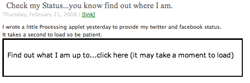
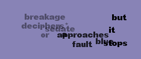
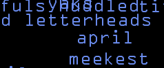
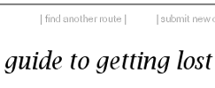
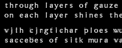
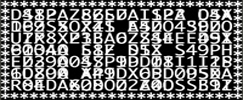
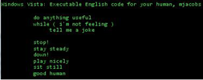
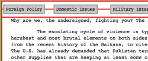

Project Gallery next (#2) next (#3) next (#4)
andrew bragdon: andrew_bragdon[#]brown.edu
Grammar-Mini-Project: Personality Explorer
braxton soderman: slowmend[#]yahoo.com

Grammar-Mini-Project: 1st Iteration Final Work
caleb larsen: cmlarsen[#]gmail.com

Grammar-Mini-Project: 1st Iteration 2nd Iteration
christina salvatore: c.p.salvatore[#]gmail.com

Grammar-Mini-Project: 1st Iteration Final Version
chris smothers: christopher_smothers[#]brown.edu

Grammar-Mini-Project: 1st Iteration
Grammar-Mini-Project: 2nd Iteration
Donko Jeliazkov: djeliazk AT risd DOT edu
Project 1: Heaven + Earth
First Iteration - v1.0
Second Iteration - v1.3
jenny filipetti : Jenny_Filipetti[#]brown.edu
Project #1 a field guide to getting lost

jeremy ashkenas: jashkenas[#]gmail.com
Grammar-Mini-Project: 1st Iteration 2nd Iteration
john cayley: cayley[#]shadoof.net

Justin Katko: justin.katko[#]gmail.com
Grammar-Mini-Project: 1st Iteration 2nd Iteration

mary choutier: mchoueit[#]risd.edu
Grammar-Mini-Project: ///Strings and Masking Tape///
matthew jacobs: mjacobs[#]brown.edu
Grammar-Mini-Project: 1st Iteration Final

sebastian gallese: sebastian_gallese[#]brown.edu
Grammar-Mini-Project:
Terrorist
- 